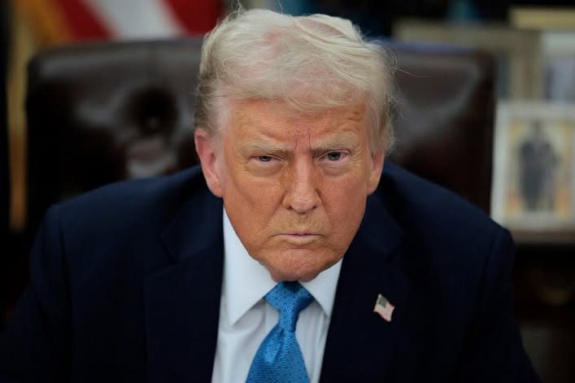

Trump Clashes With Independent Journalist During Heated White House Exchange
News
WASHINGTON, D.C. — US President Donald Trump had a tense exchange with Andrew Feinberg, a White House correspondent for The Independent, on Tuesday, October 20, after the journalist raised questions about a proposed government programme targeting fraud.
The confrontation occurred during an Oval Office event where the administration announced a $25 million fund designed to encourage Americans to report fraudulent activities.
According to media reports, Feinberg questioned why the proposed whistleblower programme offered a 1% commission when the federal False Claims Act provides for rewards that can reach at least 10% of the money recovered in qualifying cases.
Trump responded with a warning, telling the journalist to “be careful.” The remark attracted attention as the discussion between the president and the reporter became increasingly tense.
Trump Interrupts Questions About His Golf Courses
The disagreement continued when Feinberg attempted to raise a separate question concerning Trump's golf courses.
Trump challenged the journalist, asking, “Are you a sick person?” before cutting him off without allowing him to finish his question.
The incident was subsequently reported by several news organisations, including Newsweek and The Wrap.
Feinberg later addressed the confrontation on X, explaining that he had introduced himself to Trump less than five minutes before the exchange took place.
Because the president interrupted him, the full question about the golf courses was not completed publicly. The available reporting therefore does not establish the complete wording of the question Feinberg intended to ask.
JD Vance Criticises the Journalist
Vice President JD Vance also commented on the incident after sharing a video clip of the confrontation.
According to media reports, Vance criticised Feinberg's conduct and described the journalist's question as dishonest, aligning himself with the administration's criticism of the exchange.
The incident prompted different interpretations of what had happened. Trump and his supporters questioned the journalist's approach, while the president's response attracted attention as another example of the strained relationship between his administration and sections of the news media.
The controversy grew further after the White House Rapid Response account reportedly published a post containing an offensive slur referring to people with Down syndrome, according to The Daily Beast. Reports said the identity of the person responsible for the post had not been publicly established at the time.
Tensions Between Trump and the Press Continue
The confrontation adds to a broader history of disagreements between Trump and journalists covering his administration.
Trump has repeatedly accused major news organisations of publishing “fake news” and has taken legal action against several media outlets. His critics argue that his frequent attacks on the press risk weakening public confidence in independent journalism. Trump, however, maintains that much of the media coverage he receives is unfair and politically biased.
The latest incident has once again drawn attention to the challenges journalists face when questioning political leaders during official appearances.
Presidential press conferences and public briefings give reporters opportunities to scrutinise government decisions, seek clarification and raise questions on matters of public interest. At the same time, disagreements over the wording and tone of questions can become political controversies in their own right.
The exchange between Trump and Feinberg illustrates the continuing friction between the White House and parts of the American press. Further scrutiny of the incident will depend on the available footage, the full context of the questions asked and the responses from those involved.